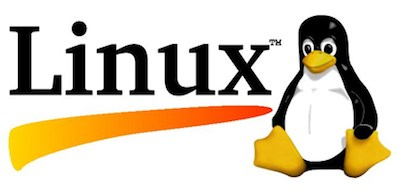

Macam-macam LINUX
Nov 5, 2017 Sistem operasi Linux berbeda dengan sistem operasi yang lain karena bersifat open source atau bisa disebut bebas dikembangkan oleh siapapun oleh sebab itu banyak sekali varian sistem operasi ini. Sebagian besar pengguna sistem operasi Linux berpendapat bahwa sistem operasi ini lebih mudah digunakan, lebih simpel, terstruktur, serta tahan terhadap virus dan malware karena sebagian besar virus dan malware berdasar pada program sistem operasi Windows. Berikut ini macam-macam sistem operasi Linux yang paling populer, diminati, dan digunakan penggunanya:
1. Debian
Debian adalah salah satu tipe dari macam-macam sistem operasi Linux yang sudah lama ada sejak tahun 1999 lalu dan terus dikembangkan secara teratur setiap tahunnya hingga sekarang sudah memasuki versi 8. Sistem operasi ini kurang cocok digunakan untuk tujuan personal karena fungsinya lebih diperuntukkan pada penggunaan di sistem komputer server dan admin. Debian sebagai sistem operasi server banyak diapresiasi dan menjadi andalan penggunanya.
2. Ubuntu
Ubuntu merupakan tipe sistem operasi Linux yang dasarnya dikembangkan dari Debian. Bedanya sistem operasi ini dapat digunakan tidak hanya di komputer server dan admin saja tapi juga ramah dan sesuai untuk penggunaan pada komputer personal atau pribadi. Bahkan pada versi terbaru juga dikondisikan untuk penggunaan di perangkat smartphone. Oleh sebab itu, sistem operasi Linux jenis ini menjadi yang paling banyak dipakai dari sekian macam-macam sistem operasi Linux yang ada. Proyek Ubuntu sendiri dikembangkan oleh Canonical Ltd sejak tahun 2004 dan rutin melakukan update versi setahun 2 kali. Tiap versi baru memiliki masa support 2 tahun dan khususnya versi genap memiliki masa support 3 tahun pada tipe personal dan 5 tahun pada tipe server.
3. Linux Mint
Jika Ubuntu tadi merupakan perkembangan dari Debian, maka Linux Mint dapat dibilang cucu dari Debian karena dikembangkan dengan dasar Ubuntu. Sistem operasi Linux satu ini dikembangkan untuk tujuan penggunaan pribadi atau personal (PC) dan terbagi menjadi 2 varian yaitu CINNAMON dan MATE. Kelebihan Linux Mint antara lain user friendly, desain simpel, dan mendukung berbagai fasilitas multimedia. Linux Mint juga memiliki keunggulan lain yaitu dapat menjalankan sebagian besar program aplikasi Ubuntu karena merupakan perkembangannya.
4. Red Hat
Red Hat juga merupakan salah satu dari sistem operasi Linux yang populer. Bisa dibilang Red Hat satu angkatan dengan Debian karena telah lama ada dan juga menjadi dasar bagi perkembangan macam-macam sistem operasi Linux yang lainnya seperti Fedora dan CentOS. Keunikan Red Hat karena mengusung tema simpel dan berdasar baik sehingga mudah sekali untuk menginstallnya.
5. Fedora
Fedora adalah sistem operasi Linux yang kepopulerannya bersaing dengan Ubuntu karena fitur dan tampilannya bisa dikatakan mirip. Tetapi Fedora bersifat lebih terbuka karena dikembangkan oleh kalangan komunitas programmer meskipun masih disponsori dan didasari oleh Red Hat melalui RHEL. Sistem operasi ini dijalankan dengan basis RPM dan YUM serta sekarang sudah mencapai versi terbaru yaitu Fedora 24 yang dinilai mempunyai banyak kelebihan baik dari sisi platform dan aplikasi. Meski begitu Fedora memiliki kekurangan antara lain update yang tidak seteratur Ubuntu dikarenakan tipe dan proses pengembangannya.
6. SUSE Linux
Jika Anda berada di negara-negara Eropa maka dapat Anda temui sistem operasi SUSE Linux sebagai yang paling populer dan banyak digunakan dibandingkan dengan macam-macam sistem operasi Linux lainnya. Tampilan desain yang lebih segar serta kemudahan dalam memanagenya menjadikan nilai lebih bagi sistem operasi Linux satu ini. Selain itu SUSE Linux kompatibel pada berbagai jenis perangkat. Bahkan Anda orang Indonesia dimudahkan dalam penggunaan SUSE Linux karena tersedia pilihan Bahasa Indonesia.
7. Slackware
Slackware adalah yang paling tua dibandingkan macam-macam sistem operasi Linux yang lain. Uniknya sistem operasi Linux satu ini masih dikelola dan dikembangkan sampai sekarang tepatnya oleh Slackware Linux Inc. yang dikepalai Patrick Volkerding yaitu sang pembuat sistem operasi ini. Jika Anda mencari jenis sistem operasi Linux yang stabil, memiliki struktur managerial simpel dan desain yang mudah maka Slackware dapat menjadi jawaban atas pertanyaan Anda.